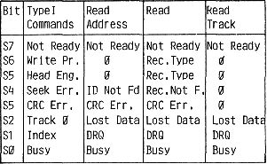

80-Bus Journal |
September 1983 · Ausgabe 9 |
Nun ist der Controller bereit, vom Rechner Befehle entgegenzunehmen. Dafür stellt er folgende Register zur Verfügung:
| FDCCMD | Kommandoregister |
| FDCTRK | speichert die Spurnummer |
| FDCSEC | speichert die Sektornummer |
| FDCDAT | Speicher für Schreib/Lesedaten |
| FDCSTA | gibt Fehlermeldungen aus |
Mit dem Out-Befehl (Taste O) und der entsprechenden Portadresse (sind dem Anfang des Assemblerlistings zu entnehmen) können zu Testzwecken direkt Kommandos an den FDC ausgegeben werden.
Als Beispiel:
O 0C 03 läßt den Schreib/Lesekopf auf Spur 00 zurückfahren (dazu sollte man die Schnecke des Laufwerks manuell vorstellen, damit’s auch eine Strecke zum fahren gibt)
Die möglichen Befehle sind ebenfalls am Beginn des Listings zusammengestellt.
Nach der Ausführung eines solchen Befehls macht der FDC einen Interrupt, der ihn in unserem Programm in die Routine FLPINT springen läßt. Zu Testzwecken wird dort das Wort „INT“ auf den Bildschirm geschrieben gefolgt von der Adresse, die nach dem Programmteil steht, der durch den Interrupt unterbrochen wurde. Dieser Teil der Interruptroutine wird nach erfolgten Testläufen wieder entfernt.
Die Hauptaufgabe des Interruptprogramms ist es festzustellen, ob die Unterbrechung innerhalb einer Schleife geschah. Ist dies der Fall, wird das Programm außerhalb der Schleife fortgesetzt.
Dieser Programmiertrick erlaubt es, mit einer Endlosschleife auf einen Interrupt zu warten. (z.B. in Zeile 1880). Handelt es sich um NMIs, so wird nach Rückkehr aus der NMI-Routine (hier Lesen eines Bytes von Diskette) in die Schleife zurückgekehrt und auf den nächsten NMI gewartet. Erst der Interrupt von der PIO, der anzeigt, daß die gesamte Aktion abgearbeitet ist, entläßt das Programm auf oben erwähnte Weise aus der Schleife.
Nach diesen Schleifen, die in allen Programmteilen in gleicher Art auftauchen, wird jeweils der Inhalt des Statusregisters (FDCSTA) in den Akku gelesen. In der gegenwärtigen Form des Programms wird diese Information noch nicht weiterverarbeitet. Setzt man aber einen Breakpoint dahinter (E7H) kann man nach Ausführung des Kommandos im Akku die Fehlermeldungen ablesen, die zeigen ob der Befehl vom Controller richtig durchgeführt wurde.
Mit dem QUERY-Befehl (Taste Q) kann dieses Register auch direkt auf den Bildschirm geholt werden.(Q 0C).
Die wichtigsten Fehlermeldungen, die uns häufig großes Kopfzerbrechen bereitet haben, finden Sie in der folgenden Tabelle:
| 80 | Not Ready | ;Laufwerk nicht bereit |
| 10 | Record Not Found | ;Sektor nicht gefunden |
| 04 | Lost Data | ;Daten verloren |
| 08 | CRC Error | ;Prüfsummenfehler |
| 00 | ;Hurra, gewonnen |
Da die Fehlermeldungen bei den verschiedenen Befehlen unterschiedlich sind, folgt eine Tabelle mit der Bedeutung der Bits:
Bild 5
| Seite 8 von 28 |
|---|